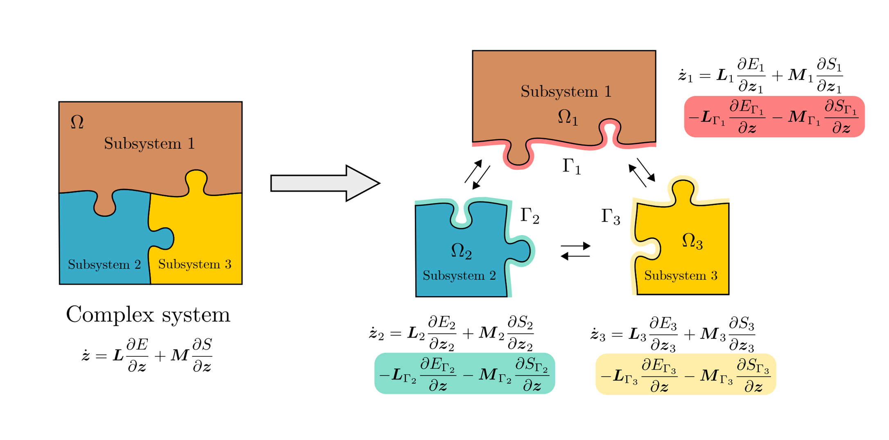

I am a fourth-year Ph.D. Candidate in Mechanical Engineering at the University of Zaragoza (Spain), inside the Applied Mechanics and Bioengineering group. My Ph.D. thesis is being supervised by Elías Cueto and Alberto Badías. My main research topics lie in the interface between computational mechanics, structure-preserving deep learning and model order reduction with the aim of learning physical simulations from data for real-time applications. From October 2022 to April 2023, I did a resarch intern at the CRUNCH Group led by George Karniadakis at Brown University. I obtained my Bachelor (2014) and Master (2016) degree of Industrial Engineering at the University of Zaragoza, majoring in Mechatronics. Also, I recently started a Bachelor degree in Mathematics.
• Sept 2023 - My new webpage is live! Right now, I'm waiting for my thesis defense, and actively looking for potential postdoc or industry position.
Publications
2023

Port-metriplectic neural networks: thermodynamics-informed machine learning of complex physical systems
You can contact me via my institutional email quercus (at) unizar (dot) es or my personal email quercushernandez (at) gmail (dot) com to ask me any questions about my work. I am very responsive, don't be shy!